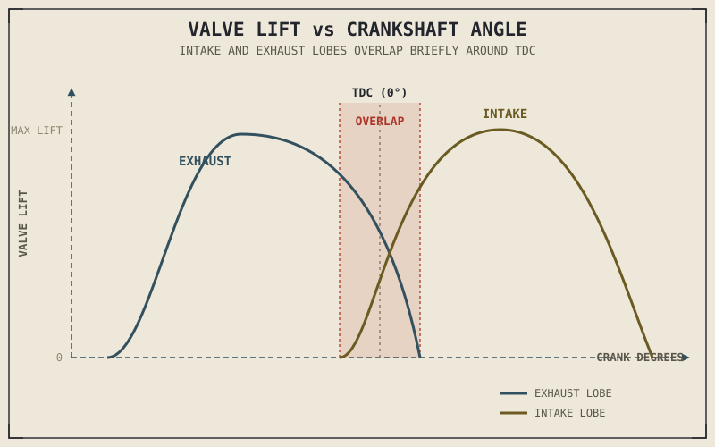

Two motorcycles, same displacement, same number of valves, same basic architecture. One idles smoothly, pulls cleanly from just above idle, and never feels dramatic. The other has a lumpy, uneven idle that sounds almost like it's about to stall, feels flat and unimpressive below half throttle, and then transforms entirely past a certain RPM, pulling hard all the way to a screaming redline. Nothing about the pistons, the crankshaft, or the cylinder head explains that difference. The camshaft does.
Chapter 2.6 introduced valves and left their exact timing for this chapter to cover. That timing — precisely when each valve opens, how far it opens, and how long it stays open — is set entirely by the camshaft, and it turns out to be one of the single most powerful levers available for shaping how an engine actually behaves across its rev range.
What a Camshaft Actually Is
A camshaft is a rotating shaft with specially shaped lobes along its length — one or more for each valve — that push the valve open as the lobe rotates underneath it, either directly or through an intermediate rocker arm, and let a spring pull the valve closed again as the lobe rotates past. The camshaft is mechanically linked to the crankshaft, usually by a chain, belt, or set of gears, so that valve timing stays locked to piston position no matter how fast the engine is spinning.
Here's a detail worth connecting back to Chapter 2.2's observation that a full four-stroke cycle takes two crankshaft revolutions: since each valve only needs to open once per complete cycle, the camshaft is geared to turn at exactly half crankshaft speed. Every single rotation of the camshaft corresponds to one complete intake-compression-power-exhaust cycle for that cylinder, which is a tidy piece of mechanical bookkeeping worth holding onto as camshafts get more complex later in this chapter.
Lift and Duration: The Two Numbers That Shape Everything
A cam lobe's shape is described by two numbers that matter more than almost anything else in this chapter: lift, which is how far the lobe pushes the valve open, and duration, which is how long, measured in degrees of crankshaft rotation, the valve stays open before closing again. Together, these two numbers determine how much air can move through the valve during the intake and exhaust strokes Chapter 2.2 described, and Chapter 2.3's volumetric efficiency depends directly on getting them right for a given engine's intended RPM range.
More lift and longer duration generally allow more air to flow at high RPM, where Chapter 2.3 explained the intake valve's open window becomes the limiting factor on how completely the cylinder can fill. But that same longer duration works against the engine at low RPM: with the valve open for a larger share of the cycle, some of the intake charge can be pushed back out before the valve closes, or exhaust gas can find its way back into the cylinder, both of which hurt low-RPM torque and smoothness. This is the central trade-off of camshaft design, and it's the direct mechanical reason "cammy" high-revving engines and "torquey" low-RPM engines feel so different, even when their displacement and valve count are identical.
A camshaft doesn't add power to an engine. It decides where in the rev range the engine's power actually shows up — and making one part of the rev range stronger almost always means making another part weaker.
Valve Overlap, Explained in Full
Chapter 2.2 mentioned, without fully explaining, that the intake valve can open slightly before the exhaust valve has fully closed — a deliberate overlap around TDC at the end of the exhaust stroke and the start of the intake stroke. Now that lift and duration are on the table, this overlap makes complete sense as a camshaft design choice: it's the direct result of exhaust duration and intake duration being set generously enough, relative to their respective openings, that their open windows briefly coincide.
At high RPM, this overlap can genuinely help: the outgoing exhaust gas is still moving fast enough that it helps draw the next intake charge in behind it, a scavenging effect that improves cylinder filling exactly when Chapter 2.3 said filling becomes hardest to achieve. At low RPM, that same overlap becomes a liability — gas isn't moving fast enough to scavenge usefully, so instead some exhaust gas can flow backward into the intake tract or some fresh intake charge can escape straight out the still-open exhaust valve, which is exactly what produces the lumpy, uneven idle characteristic of an aggressively cammed engine. The rough idle isn't a flaw. It's the visible, audible signature of a camshaft tuned to prioritize high-RPM breathing over low-RPM manners.

A valve-lift diagram plotted against crankshaft degrees, showing intake and exhaust lobe profiles overlapping briefly around TDC, with the overlap region highlighted.
One Camshaft or Two: SOHC and DOHC
Some engines use a single overhead camshaft, or SOHC, that operates both the intake and exhaust valves, usually through rocker arms that translate the cam's motion to each valve. Others use two separate camshafts, or DOHC — one dedicated entirely to intake valves, one to exhaust — each acting on its valves more directly, without an intervening rocker arm. A DOHC layout generally allows more precise, independently tunable timing for intake versus exhaust, and tends to support higher RPM ceilings, since it removes some of the added mass and flex a rocker arm introduces into the valve train Chapter 2.6 already flagged as sensitive to valve float. A SOHC layout is mechanically simpler, lighter overall, and often cheaper to produce and maintain, and remains entirely capable for engines that don't need to chase the outer edge of high-RPM performance.
This is, again, not a contest with a universally correct answer — it's the same lighter-versus-heavier, simpler-versus-more-capable trade-off that's run through this entire part of the book, just showing up one more time in how the camshaft itself is arranged.
A Common Misconception, Cleared Up Early
It's easy to hear about an "aggressive" or "hot" camshaft — more lift, longer duration — and assume it simply makes an engine more powerful, full stop. What it actually does, as this chapter has tried to make clear, is reshape where in the rev range that power shows up, almost always by trading away low-RPM and mid-range strength for a stronger top end. Installing a more aggressive cam in an engine that's mostly ridden at low RPM in traffic doesn't produce a better engine for that use — it can produce a worse one, with a rougher idle, flatter low-end response, and power that only really arrives at RPM the rider rarely reaches. This is the camshaft-specific version of the ratio-thinking Chapter 1.6 introduced for spec sheets generally: a component's aggressiveness only means something in relation to how and where the engine is actually going to be used.
Where This Leads
This chapter has now covered how air gets in, how it's ignited, how the resulting push becomes rotation, and how valve timing shapes when all of that happens across the rev range. What hasn't been addressed directly yet is the cylinder's own physical dimensions — how the specific combination of bore and stroke, introduced as vocabulary back in Chapter 1.5, actually shapes an engine's character independent of everything covered so far. Chapter 2.8 returns to bore and stroke and gives them the full engineering treatment.
Key Concepts to Remember
- A camshaft's lobes open the valves as they rotate, geared to the crankshaft at exactly half speed, since each valve only needs to open once per two-revolution, four-stroke cycle.
- Lift and duration — how far a valve opens and how long it stays open — are the two primary variables that shape an engine's power delivery across its rev range.
- Longer duration generally improves high-RPM breathing at the direct cost of low-RPM torque and smoothness; this trade-off, not raw aggressiveness, defines a camshaft's character.
- Valve overlap near TDC uses exhaust momentum to help scavenge and refill the cylinder at high RPM, but causes rough idle and reduced low-RPM torque, since gas isn't moving fast enough to benefit from it at low speed.
- DOHC layouts generally allow more precise timing and higher RPM ceilings than SOHC, at the cost of added complexity, weight, and expense — another instance of this part's recurring lighter-versus-simpler trade-off.
Cross-References
| ← Ch. 2.2 | Previewed valve overlap without explaining it; this chapter supplies the full mechanical reasoning behind why it exists and what it costs. |
| ← Ch. 2.3 | Established volumetric efficiency as RPM-dependent; this chapter shows how camshaft lift and duration are the direct mechanism tuning that dependency. |
| ← Ch. 2.6 | Introduced valves and valve float; this chapter explains exactly what times their motion and how that timing is chosen. |
| ← Ch. 1.6 | Established that a specification only means something relative to intended use; this chapter applies that directly to camshaft aggressiveness. |
| → Ch. 2.8 | Returns to bore and stroke, the cylinder's own physical dimensions, with the full engineering detail this chapter's camshaft discussion assumed as background. |